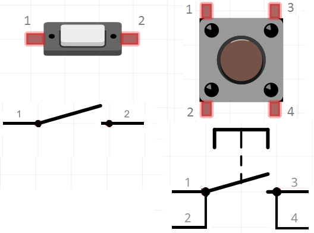
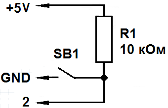
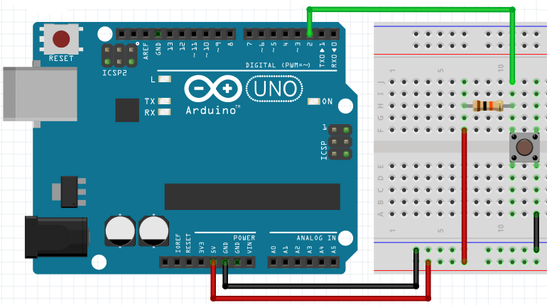
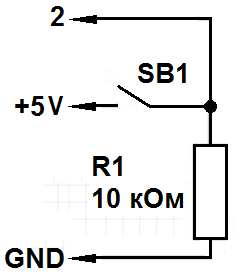
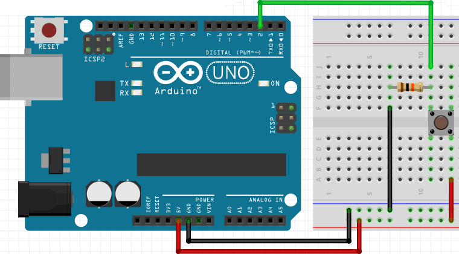

Подключение кнопки к Arduino
Виды кнопок
Назначение кнопки – физическое соединение или разрыв проводников.

Рис. 1 - Виды кнопок, их внешний вид и обозначение на электрической схеме
Некоторые кнопки после нажатия оставляют проводники соединёнными (фиксирующиеся кнопки), другие – сразу же после отпускания размыкают цепь (нефиксирующиеся кнопки).
Также кнопки делят на:
- нормально разомкнутые - при нажатии замыкают цепь,
- нормально замкнутые - при нажатии размыкают цепь.
В наборах с Arduino чаще всего имеются нормально разомкнутые кнопки без фиксации. Ниже приведены основные способы подключения таких кнопок к Arduino.
.Схема с подтягивающим резистором
В данной схеме (рис. 2)через резистор 10-100 кОм к цифровому контакту "подтянули" напряжение питания +5В. Таким образом, когда кнопка отжата на цифровом контакту устанавливается состояние логической "1" (HIGH).

Когда кнопка будет нажата, потенциал +5В будет стянут к общему проводнику GND и на цифровом контакте установится значение LOW. Чтобы определить нажата кнопка или нет, необходимо отслеживать состояние контакта и если оно равняется LOW, то кнопка нажата и можно выполнить нужные действия.
Соберем схему с подтягивающим резистором на макетной плате (рис. 2) и загрузим в Arduino скетч №1. Результат работы скетча будем наблюдать в Мониторе порта.

Скетч №1
// Задаём номера выводов: int buttonPin = 2; void setup() { pinMode(buttonPin, INPUT); Serial.begin(9600); } void loop() { int buttonState = digitalRead(buttonPin); // считываем состояние кнопки Serial.println(buttonState); // выводим состояние кнопки delay(1000); }
Когда кнопка нажата в Монитор порта выводится "1", т.е. на цифровом контакте присутствует сигнал высокого уровня (логическая "1"). При нажатии на кнопку в Монитор порта будет выводиться значение "0". При отпускании кнопки в Мониторе порта снова выводиться "1".
Ниже представлен скетч №2 с примером обработки нажатия кнопки.
Скетч №2
int sb1 = 2; int ledPin = 5; int state; int i; void setup() { pinMode(ledPin, OUTPUT); pinMode(sb1, INPUT); } void loop() { state = digitalRead(sb1); // считываем состояние кнопки if (state == LOW) { for(i=1;i<4;i++) { digitalWrite(ledPin, HIGH); // зажигаем светодиод delay(500); digitalWrite(ledPin, LOW); // гасим светодиод delay(500); } } }
Схема со стягивающим резистором
В схеме со стягивающим резистором через резистор номиналом 10-100 кОм цифровой контакт "стянут" к GND. Таким образом, когда кнопка разомкнута, на цифровом контакте — логический ноль (~0V) или состояние LOW.
Если нажать кнопку, то на цифровом контакте установится почти +5В, то есть логическая «1» (HIGH).В этом случае на цифровом контакте нужно отслеживать HIGH.


В скетче №3 приведен пример обработки нажатия кнопки подключенной к Arduino по схеме со стягивающим резистором. Она отличается лишь условием в операторе if.
Скетч №3
int sb1 = 2; int ledPin = 5; int state; int i; void setup() { pinMode(ledPin, OUTPUT); pinMode(sb1, INPUT); } void loop() { state = digitalRead(sb1); // считываем состояние кнопки if (state == HIGH) { for(i=1;i<4;i++) { digitalWrite(ledPin, HIGH); // зажигаем светодиод delay(500); digitalWrite(ledPin, LOW); // гасим светодиод delay(500); } } }